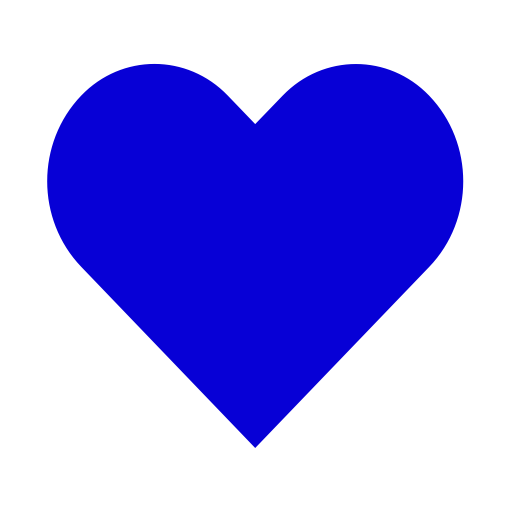

Essa é a média geral de todas as avaliações feitas por usuários que tiveram contato com o projeto.
Essas são avaliações básicas do projeto. Futuramente, haverá também avaliações técnicas com métricas
mais específicas.
As notas variam de 1 a 5, sendo 1 a menor pontuação e 5 a maior.
Total de avaliações
Ultima Avaliação
Ei, parece que você ainda não avaliou o projeto!
Sinta-se à vontade para avaliar. Além de ser super simples e rápido, ajuda muito a sabermos como foi o
andamento do projeto.

Legal! Você deu o primeiro passo para avaliar o projeto.
A avaliação é muito simples. No total, existem 4 etapas possíveis
Avaliação Geral
Uma visão geral e simplificada do projeto. Esta etapa é obrigatória para que sua avaliação conste em
nosso Website.
Avaliação do Website
O foco aqui é a parte técnica e a experiência de utilização do usuário.
Avaliação da Documentação
Este projeto exigiu uma documentação extensa. Por isso, disponibilizamos este tópico para uma
avaliação técnica da qualidade desse material.
Avaliação de Recomendação
Por fim, um tópico para você dizer, com toda a sinceridade, se recomendaria este projeto para outras
pessoas.
Vamos Lá?
Agradeço pelo seu feedback.
Sua avaliação foi registrada com sucesso! Em alguns instantes, ela ficará visível para todos os
usuários que entrarem em nosso website.